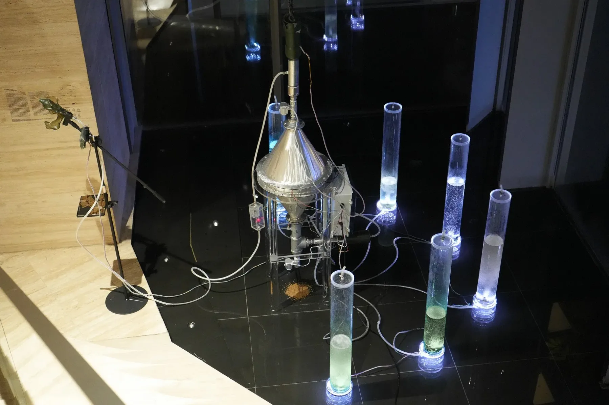
Interactive installation · Real-time data visualization
A visitor breathes into a bioplastic mouthpiece. The machine measures the CO₂ in that breath, feeds it to living algae, and shows on a small screen how much carbon one person just gave, and how little it is.
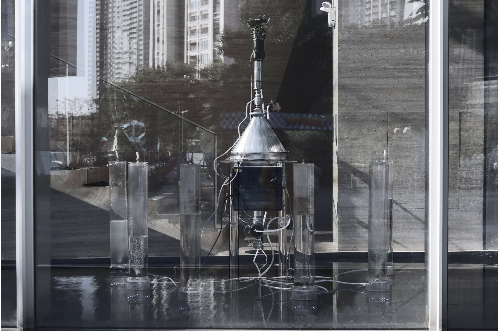
01 · Concept
Carbon numbers are usually too large to feel. Carbon Farm shrinks them to the size of a single exhale: you breathe out, and the machine tells you exactly what that breath contained and where it went.
The CO₂ doesn’t disappear. It is absorbed, released into the water of five algae photobioreactors, and turned into biomass you can see growing in the columns around the machine.
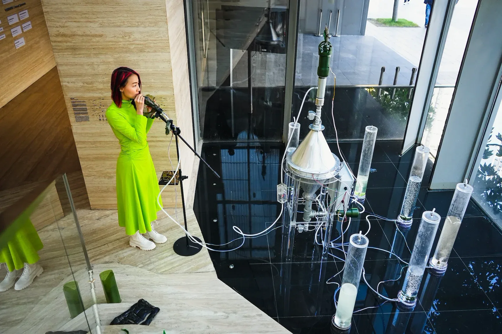
02 · System
The installation has two air inputs. The Crown, a fan at the top, pulls in ambient air. The breath station takes in a visitor’s exhale through a bioplastic straw and mouthpiece.
Both pass through a metal hourglass where the air meets a chemical sorbent, and flow and CO₂ concentration sensors report what came in.
A fan in The Crown draws ambient air. The breath station adds a visitor’s exhale, picked up through the mouthpiece and microphone.
Inside the metal hourglass, air contacts a chemical sorbent. An electric resistive heater sits inside the hourglass.
Flow and CO₂ concentration sensors read the air, and a CO₂-saturated sponge links the sorbent to the water loop.
The CO₂ is delivered to five algae photobioreactors, where it becomes algae biomass.
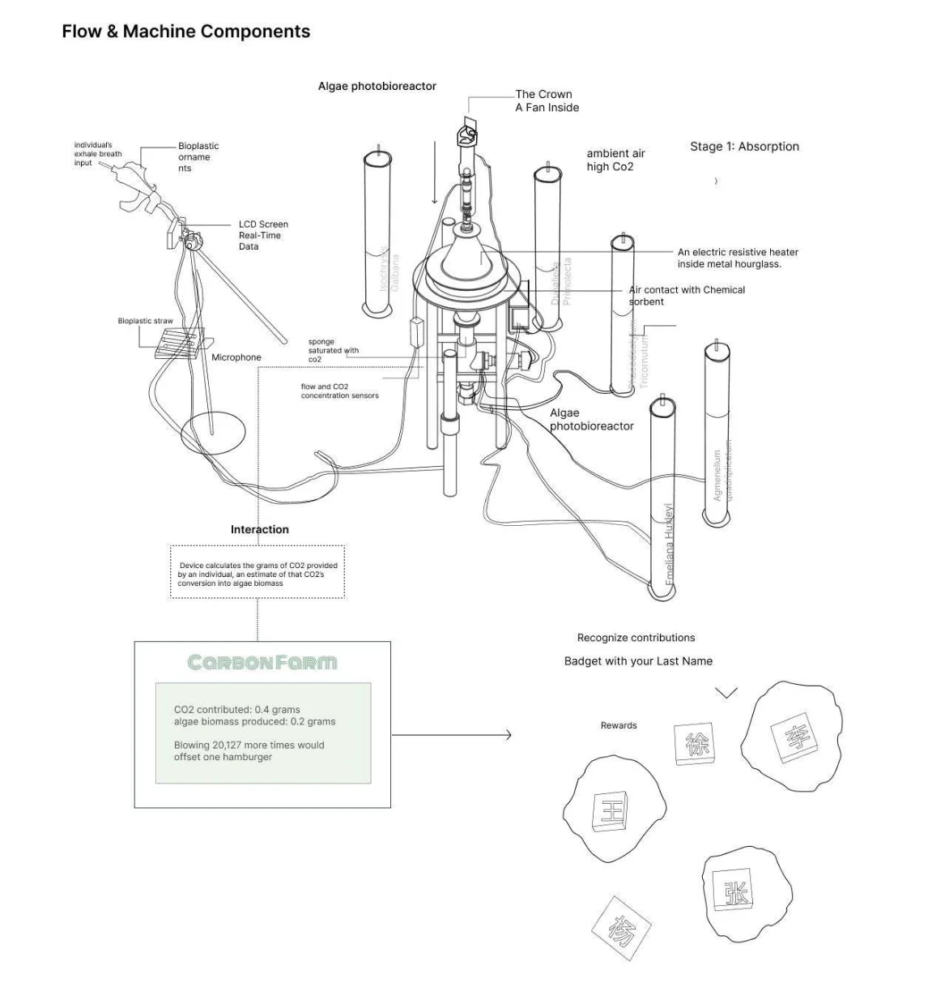
03 · Interaction
After each breath, an LCD on the microphone stand shows the result in real time: how many grams of CO₂ the visitor contributed, an estimate of how much algae biomass that becomes, and a comparison that makes the scale land.
Contributions are recognized with a badge carrying the visitor’s last name.
Carbon Farm
CO₂ contributed0.4 g
Algae biomass produced0.2 g
Blowing 20,127 more times would offset one hamburger.
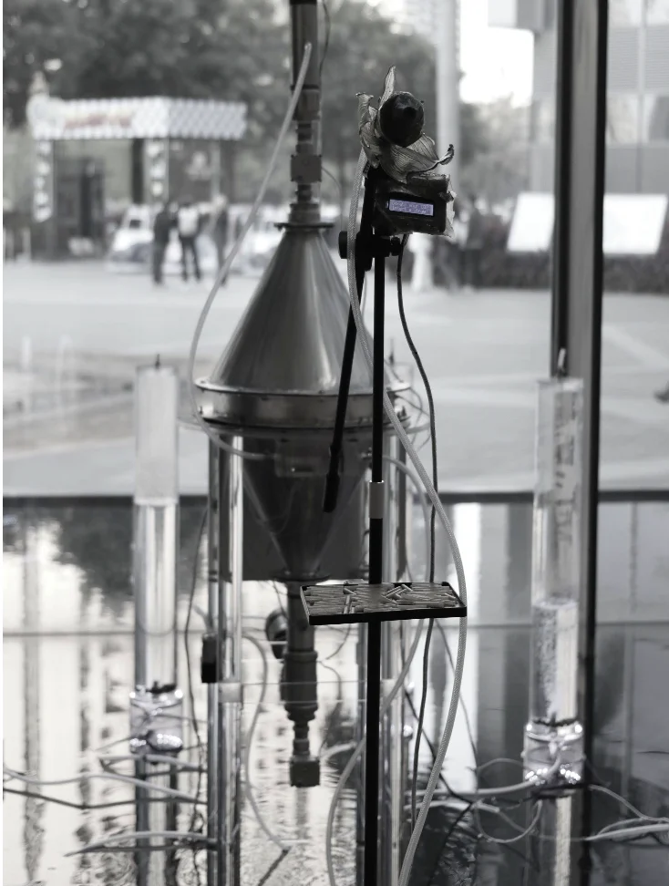
04 · Living part
Each acrylic column holds a different microalgae species, lit from below. As CO₂ bubbles through, the columns are where the carbon from visitors’ breath ends up.
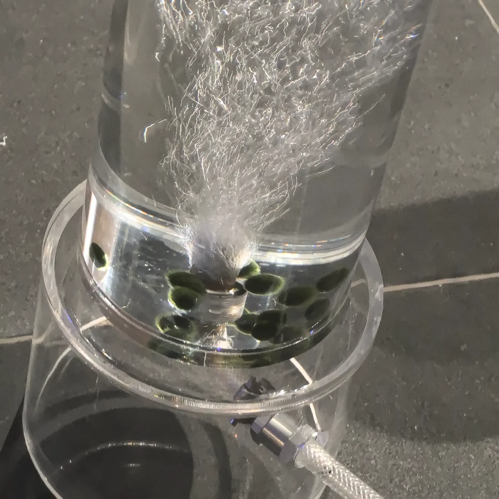
05 · Build
The reactor, sensors, and control box were assembled, wired, and tested in the exhibition space.
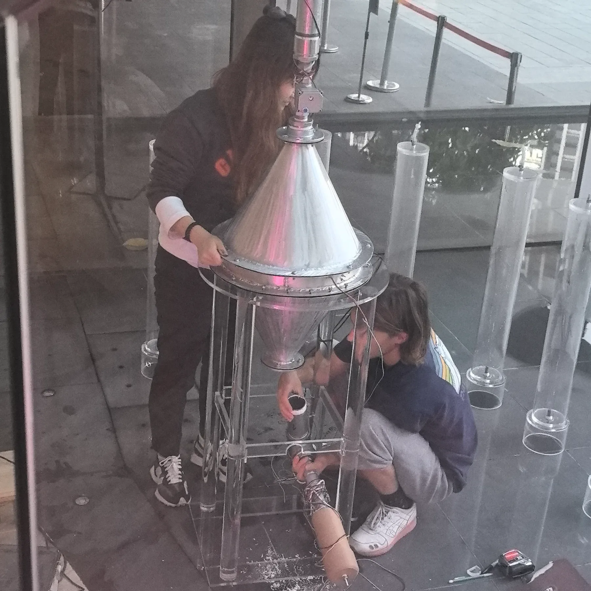
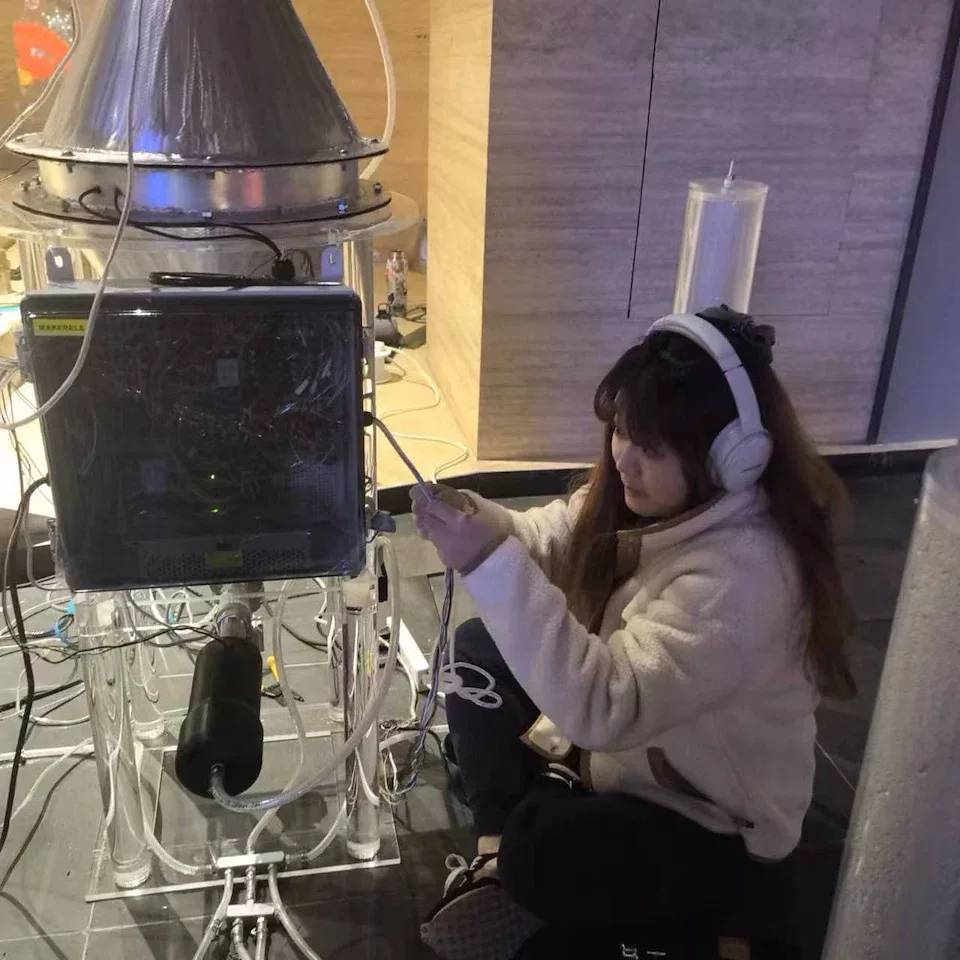
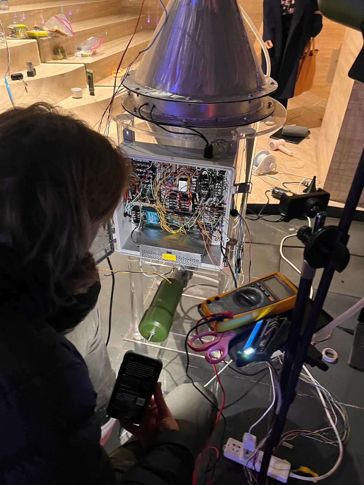
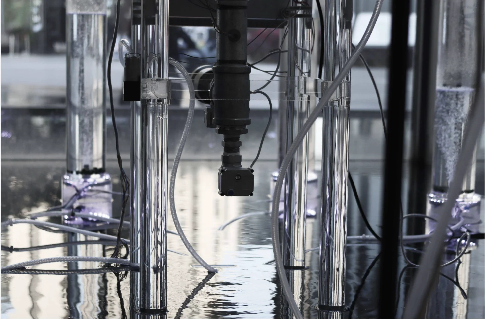
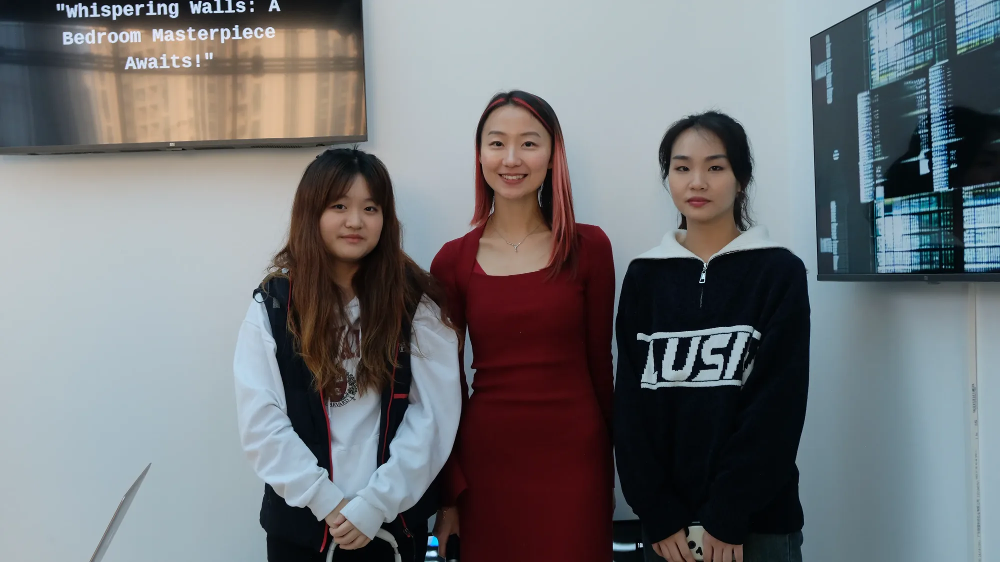